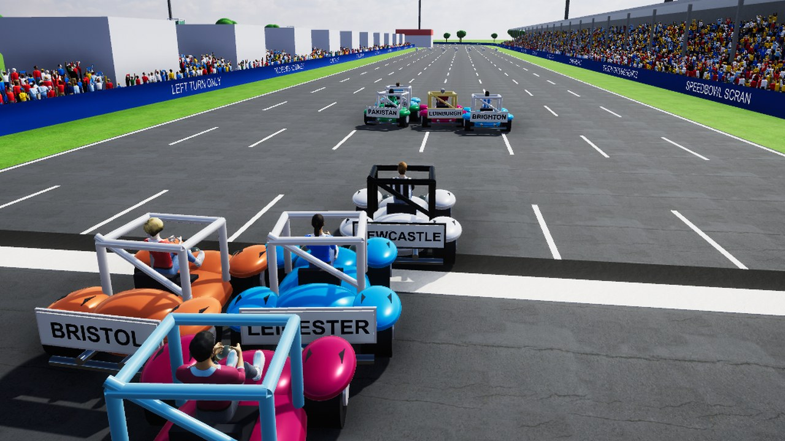

Footy Racer
Available now

Every PlayToEnjoy Titans game is designed to run on every level of device, from very old built-in graphics up to machines with a powerful graphics card.
About the game
Footy Racer is a full kart racer for everyone, on Windows, the Mac and Android phones. Sighted and blind players can race together or on their own, with a keyboard, a game controller or the touchscreen.
A commentator keeps up with the race, and the audio features are built in: spoken menus, a co-driver calling the bends, and your engine and the crowds telling you where the road is. Switch them on or off from the menus. Pick from twenty city racers and win cups to unlock five bonus racers.
Last updated: 9 November 2026
Downloads
Free trial (beta)
Our trials are betas. We put them out early so you can play them and tell us what you think: what you love, what could be better and anything that goes wrong. Your feedback helps us improve, fine-tune and fix each game before the full release, so every bit of feedback and support goes a long way. Send us your feedback.
The trial has the Speedbowl, a long oval with two huge straights, two sweeping bends and its own secret shortcut. Single race, time trial, two players, the guided practice and every setting are in; the cup and online play are in the full game. It lasts 30 days from the first time you play.
- Download for WindowsSetup file, about 340 MB.
- Download for MacMac installer (.pkg), about 370 MB.
- Download for AndroidAndroid app (.apk), about 195 MB.
How to install
Choosing a download link starts the download straight away. The file is large, so it may take a few minutes. Your browser tells you when it has finished, and the file goes into your Downloads folder.
- Windows: open the Setup file. It installs for you alone and needs no administrator password. Our games are made by an independent studio and are not signed by Microsoft, so Windows may say “Windows protected your PC”. Choose More info, then Run anyway. The installer screens are standard Windows ones that NVDA, JAWS and Narrator read.
- Mac: open the .pkg file and follow the Installer: Continue, then Install. The game is not signed by Apple, so the first time macOS may say it cannot check it. Control-click (or right-click) the file, choose Open, then Open again. If macOS still refuses: System Settings, Privacy and Security, then Open Anyway.
- Android: open the .apk file on your phone. Android asks to allow installing apps from that source (Files, Chrome or your email app): allow it, then Install. It does not come from the Play Store.
Every game comes with a Read Me that explains the controls. If you use the audio features, headphones are best: left and right matter.
System requirements
Minimum
- Windows 10 or Windows 11, 64-bit; or macOS 12 or later (Intel or Apple silicon); or Android 8 or later, 64-bit.
- Any graphics, including older built-in graphics.
- Stereo headphones or speakers.
Recommended
- Stereo headphones.
- NVDA, JAWS, Narrator or VoiceOver screen reader.
- A game controller (touchscreen on a phone).
Controls
| Action | Keyboard | Controller | Phone (touch) |
|---|---|---|---|
| Steer | Left and Right arrows | Left stick | Tilt the phone like a wheel |
| Accelerate | Space | Right trigger | One finger on the screen |
| Brake, then reverse once stopped | S, or Down arrow to reverse | Left trigger | Two fingers on the screen |
| Use your item | Up arrow | A or Cross | Swipe up |
| Hop or powerslide (hold) | Left Shift or X | X or Square | Not used |
| Gear down or up (manual gears) | A or D | Left or right bumper | Not used |
| Where am I | Tab | Y or Triangle | Swipe down |
| Pause | Escape | Start | Three-finger tap |
| Menu speech on or off | F12 | Settings | Settings |
Menus: Up and Down to move, Enter to choose, Left and Right to change a setting, Escape to go back. H or F1 gives help on the highlighted item.
Automatic or manual gears: the game asks after you pick your racer, and remembers your choice.
Accessibility features
- Menu speech through NVDA, Narrator or JAWS on Windows, and VoiceOver or the Mac voice on a Mac. F12 switches it on or off.
- Where am I: your position, lap, item, who is ahead and behind, where you are on the road and the next bend.
- Help on any menu item with H or F1.
- Automatic or manual gears, with every gear change spoken and felt in the controller.
- Separate volumes for everything, your own engine and the other racers’ engines.
- Play with a keyboard, a game controller or a phone’s touchscreen.
Feedback
Tell us what you think, or report a problem.
- Send feedback about Footy Racer (opens your email app)
- Join us on Discord
- Join our WhatsApp group